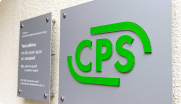

Оставить заявку


Услуги и сервисы
Мы являемся авторизованным сервисным центром по ремонту техники
Dell. Только у нас вы можете отремонтировать свой ноутбук Dell с
официальной гарантией производителя. Мы успешно работаем с 1992
года и заслужили репутацию надежного партнера, что подтверждает
большое количество постоянных клиентов. Мы гордимся тем, что к нам
обращаются по рекомендациям и, в свою очередь, советуют нас родным
и близким.

Читать далее
